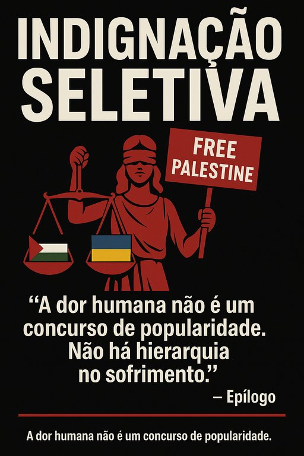

Publicado em 2025-07-05 10:26:14
“A injustiça, para ser combatida, não pode escolher bandeiras.”
— Fragmento de um mundo que já não lê fragmentos
Vivemos tempos de protesto fácil e moralidade de superfície.
A juventude — informada, conectada, rápida nos dedos e nas palavras —
ergue cartazes, grava vídeos com filtros de indignação
e marcha pelas ruas com slogans aprendidos em meia dúzia de stories.
Sim, muitos levantam a voz pela Palestina.
E devem fazê-lo — pois o sofrimento de um povo sob ocupação,
os mortos civis, os bombardeamentos cegos, a destruição de lares,
tudo isso é desumano.
Mas onde estão essas mesmas vozes
quando falamos da Ucrânia,
onde há três anos consecutivos
mísseis russos explodem escolas,
bairros civis são transformados em crateras,
e crianças são assassinadas diariamente por um tirano sedento de sangue
e ressabiado com a liberdade do povo ucraniano?
Porque grita-se por uns…
e cala-se por outros?
Será por moda?
Por militância filtrada por algoritmo?
Porque as causas com certo selo são mais partilháveis?
Porque é mais fácil indignar-se contra o “ocidente opressor”
do que contra Putin, o czar contemporâneo com couraça de propaganda e bolsos de petróleo?
O que nos diz isto sobre a nossa ética de supermercado,
onde escolhemos causas como quem escolhe cereais —
pelo rótulo, pelo sabor, pela embalagem?
A Ucrânia resistiu. E resiste.
Com sangue, sacrifício e uma dignidade que envergonha a Europa passiva.
Mas o mundo cansou-se da sua dor.
Já não há trending topic.
Já não há fotos novas.
A guerra continua, mas já não "engaja".
Entretanto, Putin — o psicopata de gabinete —
continua a lançar mísseis sobre escolas, hospitais e casas.
Um ataque por dia.
Cem mortos por semana.
Milhares de vidas despedaçadas por um sonho imperialista tão velho quanto cruel.
E o mundo?
Calado.
O olhar virou-se para outras tragédias, como se só conseguisse chorar por uma de cada vez.
Indignar-se por Gaza,
mas ignorar Mariupol,
é como chorar por uma flor pisada
e fingir que não vemos a floresta a arder.
A dor humana não é um concurso de popularidade.
Não há hierarquia no sofrimento.
O sangue de uma criança em Gaza tem o mesmo tom
que o de uma criança em Kharkiv.
Mas os algoritmos não têm coração.
E, pelos vistos, muitos humanos também já o perderam.
A luta por justiça não pode ser temática.
Não pode depender da estética da causa,
nem do número de partilhas no TikTok.
Não basta gritar contra Israel
se se aplaude Putin ou se ignora a Ucrânia.
Não basta dizer-se “anti-imperialista”
se se fecha os olhos ao novo império russo e à tirania chinesa.
A coerência moral não é confortável.
É difícil, exigente, e por vezes impopular.
Mas é ela que separa o ativista lúcido do papagaio de hashtags.
Artigo da autoria de Francisco Gonçalves in Fragmentos de Caos.
“Indignar-se por Gaza, mas ignorar Mariupol, é como chorar por uma flor pisada e fingir que não vemos a floresta a arder. A dor humana não é um concurso de popularidade. Não há hierarquia no sofrimento. Se escolhemos as vítimas com base na estética da causa ou nas modas digitais, deixamos de ser humanos — e tornamo-nos apenas consumidores de tragédias.”